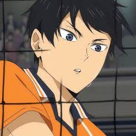
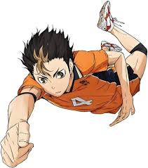
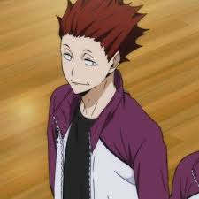

es el co-protagonista del manga y anime de voleibol Haikyuu!! Wiki. Es un prodigio como armador que, gracias a su rivalidad y amistad con Shoyo Hinata en la Preparatoria Karasuno, aprende a superar su actitud egocéntrica y a trabajar en equipo.
Go somewhere
es un estudiante de segundo año de Karasuno. Es el líbero del equipo de voleibol y su número es el 4. Es apodado por sus compañeros como «La deidad guardiana de Karasuno».
Go somewhere
un estudiante de tercer año en la Academia Shiratorizawa y uno de los Bloqueadores Intermedios del equipo de voleibol.
Go somewhere